NEW SYNERGY!
Your inks just learned a new trick.
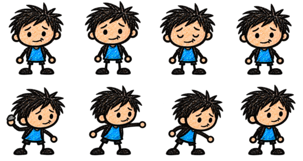
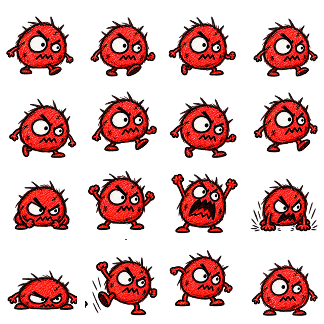
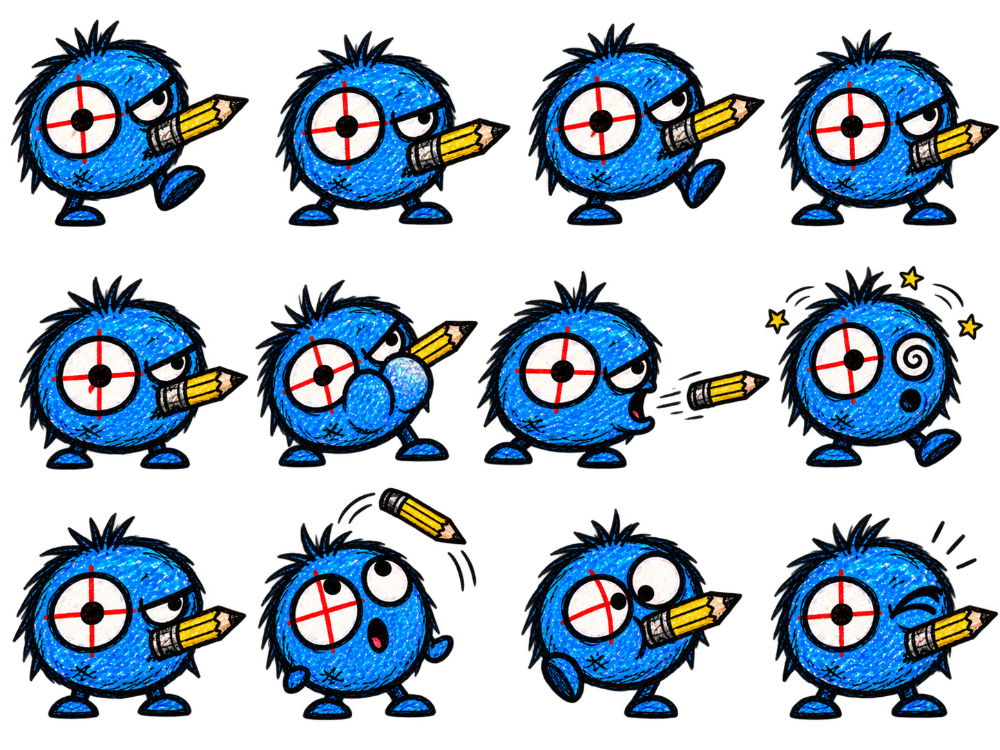
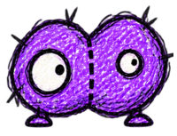
Draw walls. Keep Stevie safe.
Tap a card to inspect it.
Effects gain 1–4 levels by rarity and use pencil slots. Utilities stay outside your slots. Special unlocks are one-time.
Choose below to take the upgrade. Slot limits, caps and one-time unlocks still apply.
This only weights future upgrade rolls. It does not lock you into a class.
More wall durability, repair, geometry, and defensive cards.
More elemental inks, damage effects, and synergy pieces.
Better rarity odds and stranger cards, but enemies become 8% tougher.
still got all my fingers. probably.
Notebook scraps earned this run: 0 · Saved, even if Stevie falls.
The notebook is safe. Somehow.
You defeated The Eraser. Keep going, or take your victory lap.
Kept 0 scraps this run · Bank: 0
Wave 1 · 0 monsters defeated
Kept 0 scraps this run · Bank: 0
Tap the highlighted button to continue →
The game pauses while you review. Totals include Notebook perks, run upgrades, and your specialization.
Notebook · 0 banked scraps. Spend them from the home screen.
Open Monster notes from Pause or My notebook for the full illustrated compendium.
Saved scraps: 0
Your page stays right here until you resume.
Normal kills start at 10 points; bosses at 100. Distance adds up to 3×. Keep kills within 4 seconds for streaks: 3 kills = 1.25×, 6 = 1.5×, 10 = 2×. Stevie taking damage breaks the streak. Pauses stop the clock.
Your current run and its upgrades will be lost. Scraps you’ve already earned stay saved, along with your permanent Notebook upgrades.
Backups keep permanent progress, not the fight in progress. Keep the file or copied text somewhere safe. Restoring replaces this device’s saved progress.
This replaces scraps and upgrades; it does not add them together. Your current progress will be kept as a recovery copy on this device.
Your game pauses here. Tell us what happened and what you expected.
Open GitHub to review and submit a public issue to ShootyQ/SaveStevie. A GitHub account is needed. Nothing is sent automatically. You can also copy or save this report to share yourself.
“Writing these down. Definitely going to remember this time.” — Stevie
The game paused while you were away. Click when you’re ready.
Mr. Out & Mr. Glue · Character and animation preview. Meet both brothers together on wave 20.
Your current run ends here. Banked scraps, upgrades and discoveries stay saved.
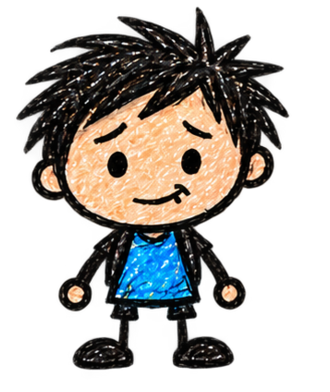
Stevie: Let’s make this page yours. Your run pauses while you’re here.F11 toggles fullscreen. Window sizes fit your screen; fullscreen uses your monitor’s resolution. Lower render quality or frame rate can help on a slower PC. Gameplay speed stays the same.
Adjust the chapter soundtrack while it plays. The music button in Pause also mutes it.
Adjust pencil scribbles, impacts and electric zaps. Set this to zero to mute effects without muting music.
Hold Erase with one thumb and rub a wall with your other finger. Release to draw again. Erasing costs no ink and recovers a portion of the paid ink in healthy walls.
Motion follows your device’s reduced-motion setting. Open Tool any time to pause and inspect your pencil, effects, and synergies.
Spend saved scraps on permanent upgrades in Stevie’s tree. Drag to explore, open a scrap to inspect it, then choose whether to buy. Existing purchases stay yours.
Reset scraps, permanent upgrades and records on this browser. You will be asked to confirm.
Jump straight into a fight with your own build. Test runs save no scraps or records. Starting a test replaces your current run; already banked scraps stay saved.
Add an upgrade, choose its rarity, and set how many copies to take. Slot limits, caps and one-time unlocks apply.
Back up saved scraps, permanent upgrades, best wave, tutorials and monster discoveries. Active runs and device settings are not included.
Try his attacks and tuck-and-roll. Cut any circled joint twice to detach that part.
Animation preview: cuts, bouncing teeth, and a rolling ball of trouble. Your run stays paused; this page spends no ink or scraps.
Permanent Notebook ranks unlocked
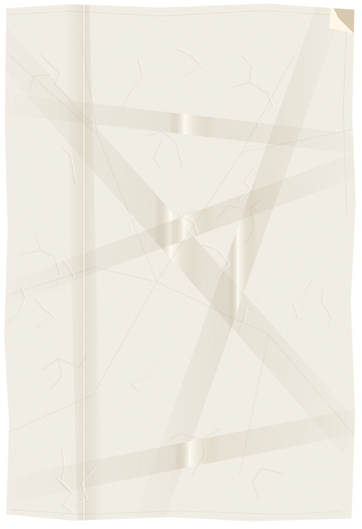
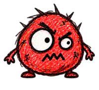
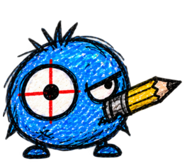
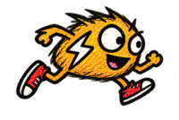
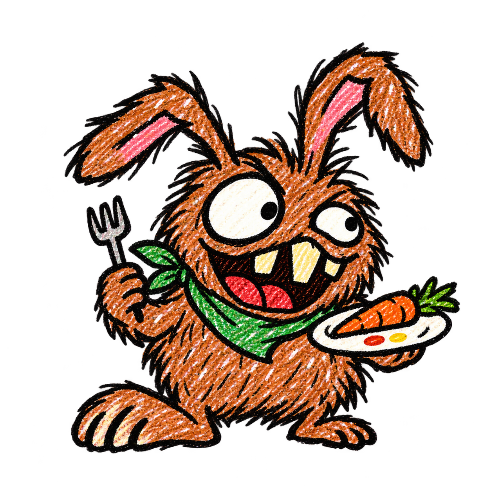
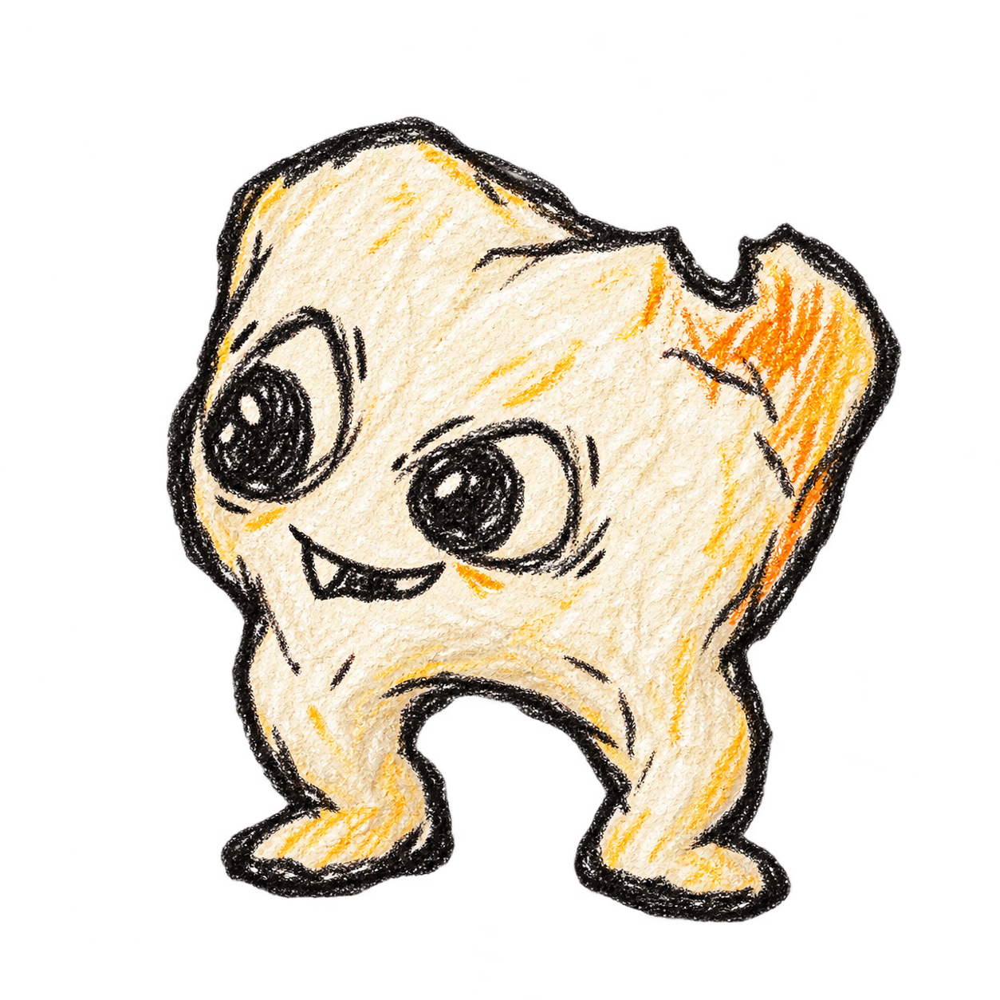
rocket sandwich??
...no.
invisible teeth?
how would I draw them
good ideas = more fun
☺ ask Max to try this
remember: circles
do NOT need to be perfect
math: 7 × 8 = 54 56!!
count it again, Stevie.
science notes:
fire + slime = bad smell.
do NOT try at lunch.
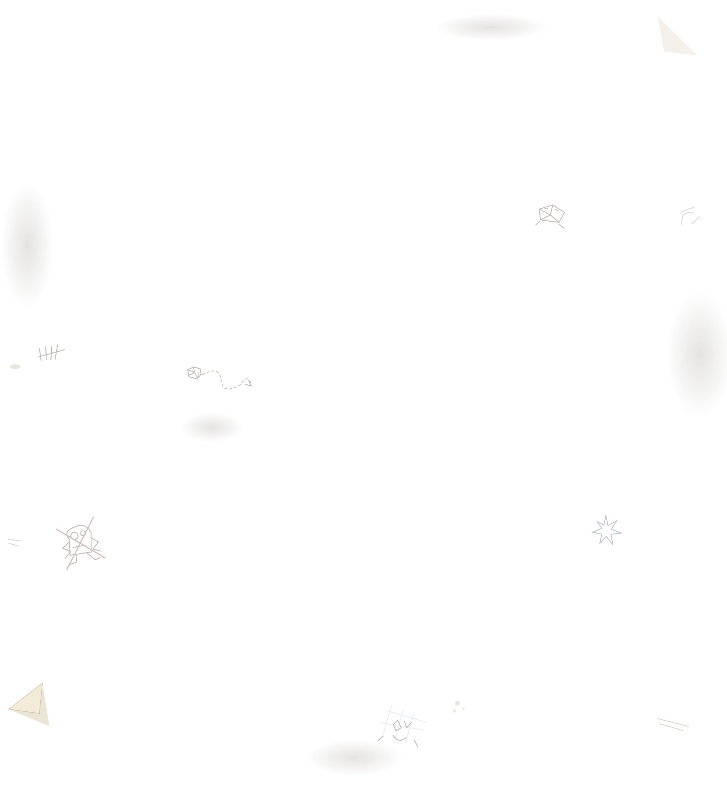
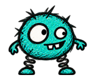
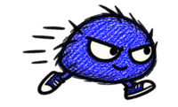
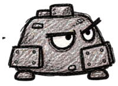
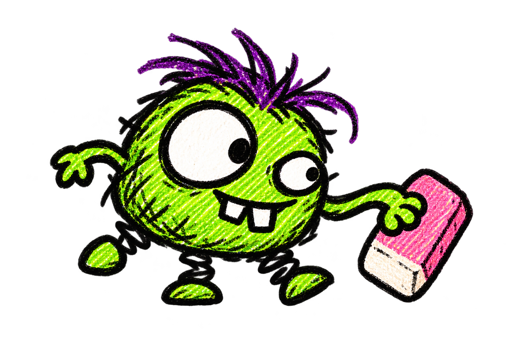
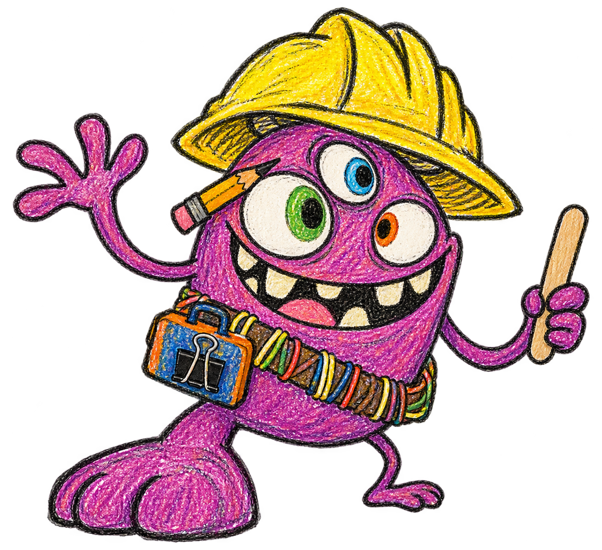
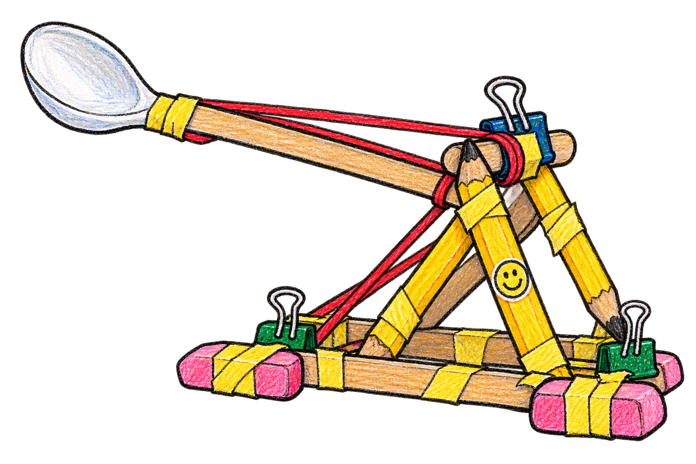
math later. monsters NOW.
if it looks silly, keep it.
DO NOT lend to Max
a very normal school project
needs more bounce?
0 scraps saved
open outlined scraps to see upgrades
drag paper · pinch / scroll to zoom
Meet the doodles behind the trouble. Creature notes appear as you discover them. Your run pauses while you browse.
Saved on this device. Switch off for uninterrupted runs. Stats show base values before wave scaling, upgrades, or armor.
Recent updates, newest first. Your run pauses while this screen is open.
Return Rip-Raff’s bombs with walls, or erase his cutting mark to hurt and interrupt him. Grab Yank’s glowing rope end, drag him and snag up to two monsters, then release to snap them away. Late-wave arrivals now grow gently from wave 8, with shared group budgets and at most six specialist helpers per wave. Matryoshk is parked; Twicey and Niblets remain. Pew-Pew allows three alive during the first six arrivals, then only one at a time. HP scaling is unchanged.
On mobile, a sinking paper press gains a larger hold ring and a small hint. Slide your finger within the ring without moving or resetting the dent, including Bootstomp’s footprint counter. PC Doodle-Doom brings up to fourteen Gribbles with faster arrivals, more backup near his patrol and quicker opportunistic throws. Touch boss backup stays the same.
Late-wave introductions now build up across four waves: Yank Doodle on 11, Chompzilla on 12, Chuckles McChuck on 13 and Rip-Raff on 14. Catapult helper recruitment starts on 14, and tunnel runner reinforcements wait until 16. Wave 11 no longer throws three new specialist mechanics and their backup at you together.
Blast walls need at least 50 pixels of line and half a second to arm before they can explode. Tiny strokes and walls broken too soon still act as normal barriers, but cannot trigger Blast explosions, launches or burning trails. Pausing does not arm ink.
Mobile and Android play now fills the screen with paper. Ink, health and time float over the page, with separate floating Erase and Pause buttons instead of a bottom toolbar. Eraser size, left-handed placement and hold-or-toggle settings still work. PC keeps its existing layout.
The mobile wave timer keeps its numbers in order, and all three direction choices fit without scrolling on portrait phones. Repulsion Ink now pushes 10 pixels farther per rank, starting at 40 pixels; bosses still resist half the shove.
Five one-time utilities add hinged walls, rolling ink boulders, charged turret deliveries, recruited monsters and Under the Desk: erase an X inside a closed shape to summon a wood-splintering creature that grabs up to three ordinary monsters. Includes custom artwork and animations. Spitball Express requires permanent paper balls and Circle Studies, and allows two turrets. Rare unlocks stay Rare; the three Legendary toys use reserved Legendary offers. The wave-clear page now uses crooked paper scraps, a teacher’s stamp and Stevie’s notes.
Scrap Tree replaces the original scrap shop. Your saved scraps and purchased upgrades carry over. After your first adventure, return to the menu and follow Stevie to the tree: open a scrap, claim the free Fresh Pencil, and learn how connected permanent upgrades work. Later runs keep the quick replay option.
Unlock Head Start for 45 scraps to choose a Common upgrade before each new run. Fat Marker is retired; Thick Ink remains the wall-durability upgrade and now pairs with Blast for Heavy Artillery. Rubble Ruff can gradually erase reinforced paper turrets: they fade as their HP drops, but keep their full firing power until erased.
Bootstomp mixes his footprint counters with double shockwaves: draw walls to catch each wave before it reaches Stevie. While relocating, he winds up and kicks nearby helpers over walls toward alternating sides of the fort, with marked landings and airborne arcs. His original stomp timing and fallen erasing windows are restored. The slower entrance, reduced helper stream and faint erased patches remain.
Bootstomp’s combat walking and tantrum speed are restored. His entrance travel now takes 2.4 seconds, half the original arrival speed, and his helper arrival rate is 30% lower. Wider PC positioning and faint erased patches remain.
Bootstomp moves 40% slower, including his entrance and tantrum shuffles. On PC he repositions around an inset perimeter instead of taking shortcuts close to Stevie. Rubbing out his patches progressively fades the drawing, leaving only a very faint ghost after the third swipe.
Bootstomp is half his previous visual size, with a smaller body collision radius and forgiving erasing targets. His movement and attack timing stay the same for this sizing pass.
Bootstomp replaces Wobblechomp at wave 10. Hold the eraser in his footprint until the landing to trip him, then rub out five persistent three-swipe patches. Walls halve a missed stomp’s ripple damage once. Watch his shoe scrape and draw across his stretched lace to stop a monster fling. His helper stream is twice Doodle-Doom’s current rate. Wobblechomp is saved for later. Erasing now requires brush movement. Repeated clicks or taps in one spot no longer count as fresh erasing swipes. Slow rubbing still works, and holding still on bare paper still charges a bounce.
The desktop playfield now stops at 1280 × 800 game pixels. Zooming the browser out or using a huge window can no longer keep pushing enemy spawns farther from Stevie. Smaller windows still fit the available space.
The beta scrap tree keeps its artwork and branches, with stronger pencil outlines and Open, View or locked Inspect tabs on upgrades. Selected scraps have a blue outline, branch shortcuts are visibly clickable, and purchases use a clear button inside the opened note.
Stevie has a dedicated hit sound. Pew Pew’s pencil shots and successful deflections have distinct cues, and Sneaky scratches out his plans. Holding the eraser still plays paper tension once the page depresses; releasing it plays the spring-back sound. Cancelling or moving away stops tension quietly.
Monsters following your redirected Sneaky McSneak routes now pause for one second instead of two. From wave 11, scheduled enemies arrive 10% less often, with fewer grunts in the mix. Run-end scorecards fit on one screen without scrolling or paging.
Hold the eraser still on bare paper for 0.4 seconds to press a growing dent into the page. Ordinary monsters slide toward it; release to bounce them a short distance outward for light damage. Bowed notebook lines, paper creases, sinking doodles and a spring-back ripple show the action. Rub to erase normally. Bosses, protected monsters and underground creatures resist the pull; pause or lost touch safely cancels the press.
Crash Dash is 15% smaller, including his collision size. He arrives ready to hurdle a wall and can recharge that jump by running 180 pixels on the ground. Air time, shoves and waiting against cover do not recharge it, so nearby backup walls still stop him. His hops over other monsters remain.
Rip-Raff patrols between work sites, cuts more shortcuts and calls more runners, reusing openings at his six-hole limit. Rip-Raff and Yank Doodle are 20% smaller. Pew Pew has a middle-ground desktop range of 350–550px. Plaguefire pools visibly burn through to the desk while growing, with merged overlapping burn areas.
Boss victories bring the camera back to one Stevie for a fully drawn relief, fist-pump jump, silly dance and victory wave, with a torn-paper ribbon, gold stars and confetti. King Doodle-Doom has a new stomping entrance and wide-open roar. Ash Impostor rises from ash, taunts, recoils when bitten and crumbles away. Reduced motion keeps the celebrations calm.
Rip-Raff brings his cutting and fire bombs from wave 11. Pew Pew moves onto the page before preparing a shot, fires from closer range on desktop and waits for his outgoing pencil to clear before a short cooldown and another throw. Forcing an underground monster up now takes one second of rubbing instead of two.
Chompzilla returns from wave 12, capped at two alive. He cracks a small section with his first bite and opens a body-sized gap with his second, keeping the rest of your wall intact. Erase the target section to make him snap at thin air, or patch the hole and make him start again. Wall effects still hurt him, and freeze and stun pause his bites. New fully drawn sprite frames cover walking, jaw wind-ups, chomping, chewing, squeezing, missed bites and reactions. The mobile ink label also stays on the left of its meter.
Wave 20 now features Mr. Out and Mr. Glue with a shared health bar. Draw over little brushes to collect whiteout—even with an empty ink tank—then paint either brother to hurt them. Empty brushes run away. Erase floor glue to load a sticky eraser, then leave traps that catch brushes and airplanes or briefly pin a brother. Tool coatings run out and return to normal without spending saved ink. The brothers clear walls, ignore wall damage and conditions, and take limited paper-ball damage. Mr. Out is now a tall, tidy correction monster with a stern face and blue cap; Mr. Glue is a round orange-capped craft goblin with a buck-tooth grin. Both brothers use complete hand-drawn sprite frames for all nine character actions, with faces, hands and bodies kept together in every image. The tearing, folding and airplane sequences also use drawn frames. Tool-supply cues remain clear.
PC introductions and wave transitions fit on one screen. Rip-Raff works from far margins with animated cutting and erasable flying grenades. Pew-Pew shoots farther on PC. Native desktop adds confirmed Quit to Desktop actions. Vampire healing starts 30% lower and gains half as much per rank; its damage stays unchanged.
Mr. Out and Mr. Glue have custom spiky, sticky monster artwork and articulated faces, claws and props. Try nine animations for each in Settings → Test a fight → Extras → White Brothers: idle, walk, entrance, attack, throw, hit, dizzy, tantrum and defeat. The studio includes individual selection, a showcase, speed, pause and low-motion controls. This is a character preview; the final boss fight is unchanged.
Zoom Nugget and Nope Goblin are taking a break from wave spawns and introductions; their artwork, notes and test options remain. Rip-Raff now arrives at wave nine, tearing shortcuts and calling runners beneath the paper. Scripted groups and King Doodle-Doom use Gribbles in place of Nuggets.
Underground monsters now lift the paper into a shaded, crawling hump. Alternating paw presses, a forward head bulge, trailing creases and bent notebook lines make the creature feel beneath the sheet. The hump settles as it emerges; reduced motion keeps it steady. Tunnel rules and rubbing time are unchanged.
PC Monster Notes now has a creature list beside its illustrated abilities and counters. Remap drawing/erasing mouse buttons, aiming keys and pause in Settings. Drawing and erasing get distinct cursors, low-ink feedback and clearer hover/focus states. Switching away pauses the game until you click Resume; phone touch controls and notes retain their layout.
Settings now has Discoveries: an illustrated, searchable reference for the ink effects, utilities, Doodle Scraps, synergies and legendary walls you have added to normal runs, plus purchased scrap projects. Previewing rewards and test builds do not reveal entries. Your collection stays between runs and travels with save backups.
PC rewards keep every choice visible beside a fixed details panel: 1–4 inspect, Enter confirms. A compact Build button and B shortcut replace playfield upgrade badges. New run-results screens show the score breakdown, final hit, build highlights and record status, with restart/menu actions always within reach. Phone rewards retain touch selection, and phone results keep their actions pinned.
PC My Notebook is a single roomy menu. Settings uses direct Sound, Controls, Display, Notebook, Saves and Test categories instead of Next/Previous pages. Desktop controls have a keyboard/mouse reference, test setup separates the encounter and starting build, and long notebook lists fit multiple items per page. Phone menus retain their touch controls and layout.
Ash Impostor now has custom singed paper-ghost artwork, smoky horns and glowing ember eyes. It pops out of the ash, floats and flutters, then fades back into embers. Reduced motion keeps the ghost steady.
Once a circle becomes a paper turret, its drawn outline and circular timer disappear, leaving just the paper cannon.
Waves 1–5 share one sheet, then 6–10, 11–15 and so on. Eraser wear, connected holes and burn scars stay through the boss fight. Live Plaguefire settles into lasting marks between waves and at boss entrance. A fresh chapter or new run gives you clean paper; ink still refills every wave.
From wave 12, fewer basic arrivals and more specialist picks leave room for clever counters. Rip-Raff arrives at wave 12; available catapults get scheduled appearances, with four builders per run. Yank Doodle chooses the longest wall within 260 pixels. Erasing Sneaky’s route removes its remaining tail; stolen routes last 20 seconds while he makes fresh plans. Pew Pew commits to his normal shot once the aiming line appears, even when you draw a wall in its way.
Erasing now wears the actual rubbed footprint into a continuous page-wide tear. Widen openings, carve irregular shapes and erase the paper bridges between them: connected openings share one thin torn edge and uninterrupted desk grain. Monsters use the real opening shapes, with shortcuts only between separate regions. No hole-spacing dead zones, percentage labels or automatic spreading.
Yank Doodle runs much faster, hooks player walls, hauls them backward and dramatically flings them off-screen. Erase his rope or interrupt him before release to save the wall. New scampering, bracing, overhead wind-up and throwing animations make his job readable. Sneaky routes and turrets are ignored; stolen walls do not refund ink or trigger destruction effects.
Desktop gameplay fills the window with touch controls hidden: right-drag erases, Esc pauses and F11 handles fullscreen in the client. Long desktop notebook panels use Previous/Next pages. Stevie’s scrap tutorial now reveals the purchase button after opening the shop, keeping it reachable instead of resetting it off-screen.
The desktop client now saves fullscreen mode, window resolution, UI scale, render quality and frame-rate preferences. Window sizes fit the available screen; fullscreen uses its native resolution. Performance options reduce drawing work while keeping gameplay speed unchanged. Reset display defaults is available in Settings.
Save Stevie can now be bundled as an offline desktop app, with downloadable test ZIPs from GitHub Actions. Desktop progress is saved locally between launches; use Settings backup and restore to bring over browser or phone progress. Window controls include fullscreen and zoom.
Legendary Electric Ink turns walls into charging Tesla coils. Every two seconds, a coordinated volley zaps up to eight nearby monsters for four times normal Electric hit damage. Longer lines spread coils for coverage. Custom copper coils, charging halos and branching bolts make the volley visible. Shields, underground safety and boss immunities still apply. Legendary Electric has its own Tesla tile and description.
Legendary Frost Ink transforms existing and new walls into chunky ice shelves with four times the HP. Custom icy facets, growing crystals and damage cracks show their strength. Erasers still slice through them, and their lifetime stays unchanged. Legendary Frost has its own Iceberg reward art and description.
Legendary Fire Ink now unlocks Backdraft alongside its four levels. Fire walls swell with heat, faster while burning monsters. Erase a charged section to vent an outward flame front: larger swells travel farther, spread wider and deal a bigger one-time burst. Surviving fragments share the spent reservoir. New pressure-pocket artwork, embers and layered flame fronts show when to cash it in.
Scribble Gribble’s wall sounds are muted. Waves 6–10 keep their current song between waves and play the second track when the first finishes, until the boss entrance. Wobblechomp’s appendages need two separately earned cuts again. Counters deal 5% and cuts deal 8% of his maximum health without the paper-ball damage throttle, making drawing a reliable way to reach phase two.
Chonks has alternating footsteps, Crash Dash has running and hurdle sounds, and Boingus has two bounce clips. Scribble Gribble and other wall attackers have their own rotating wall-chewing sounds. Paper turrets now rotate through four firing clips. Movement and attack sounds follow actual actions, with quiet movement audio and bounded overlap.
Stevie scrunches his paper balls, hits rotate two paper impacts, and broken walls get graphite cracks. Wooden knocks accompany fort impacts and catapult launches, assembly sounds follow active catapult building, turrets have their own shots, and appearing Doodle Notes have a discovery cue.
Drawing and erasing now sound as you move, with a pencil lift when you finish a line. New holes rotate through three paper tears. Monsters have dive-in, underground crawling and two pop-out sounds. Effects follow the existing volume controls, pause handling and voice limits.
The BETA Scrap Tree has more crooked doodles, abandoned monster ideas, pencil smudges and a real chocolate-milk spill. Pencil Case opens into a zip-pouch collection of all eleven drawing tools, with collected and upcoming tools clearly marked. Rougher pencil-and-crayon tools fit Stevie’s hand as they upgrade. Existing purchases and prices are unchanged.
Wobblechomp rolls in, splats and roars. Damage advances phase one; randomized attacks, hungry wall gulps and optional one-slash limb removal replace the six-cut checklist. Angled walls redirect his warned charges in the showdown. Four spike hits win, each with a flying splat. Hit the well to unlock infinite ink, or hit the fallen eye to stop its wall-erasing laser. Both phases resist outside conditions, and missed charges hurt. The optional victory doodle is now one automatically attached waving arm.
Reflected Pew-Pew pencils pierce through exposed regular monsters on their way back, defeating every one they touch. Chonk shields, underground protection and boss mechanics still apply. Pew-Pew keeps his later-wave return requirements.
Health, ink and wave stats sit above the playable paper, so monsters no longer hide behind them. Android controls have their own space below the arena. Monster-introduction buttons use clear light lettering on blue.
Settings notes and the writing on the actual scrap-tree upgrades now use uneven handwritten letters, wandering baselines and crooked spacing. Names, ranks and costs stay readable.
Waves 13+ have 40% fewer routine arrivals and smaller scripted groups. Edge-positioned catapults call volunteers after setting up; Rip-Raff returns and calls five runners after completing a usable paper shortcut. Specialists share a ten-recruit limit per wave. Yank can hook finished walls while you draw elsewhere, and pulls farther. Hijacked Sneaky groups pause confused for two seconds at the route’s end. Turrets work before bosses arrive, then disappear at the entrance. Settings now uses crumpled paper, taped sections and scrap-paper actions; the tree margins include Stevie’s class notes and rejected doodles.
The scrap tree has familiar monster doodles, crossed-out bad ideas, crooked notes to himself and a faint chocolate-milk accident. Decorations stay in unused margins, leaving skill scraps and paths clear.
Circle Studies branches into five permanent turret upgrades: longer range, longer life, up to three active cannons, faster firing and quicker auto-building. Buy one rank to open connected scraps. Building beyond capacity crumbles the oldest turret. Doodle Note range and speed bonuses remain Stevie’s own; boss waves still have no turrets.
Overlapping Plaguefire burns reveal one continuous desk surface without heavy borders or interior outlines. Cached wood grain and fewer, quieter flames and bubbles reduce drawing work and keep monsters and walls visible. Plaguefire damage, growth, lifetime and erasing stay the same.
Circle Studies and loop perks now share the same forgiving closing rule. Loop durability and completion rewards apply before the turret offer, keeping their benefits together. A circle placed too near Stevie’s fort shows a “Turret too close” paper bubble and stays an ordinary wall.
Circle Studies is more forgiving of oval, lopsided and angular doodles. Small gaps and short overlapping ends can still count as a circle, so your loop does not need to look compass-drawn. Existing circle size limits and turret rules still apply.
Draw another empty circle to replace your turret. Confirm or wait three seconds: the old cannon crumbles into paper bits and the new one gets a full ten seconds. Canceling keeps the old turret. Circling enemies still creates Enclose, and turrets still sit out boss waves.
From wave 11 onward, ordinary enemies spawn 20% less frequently. Splitters and the other later-wave additions sit out: the early cast, Pew Pew, shielded Sir Chonks, Yank Doodle and Chuckles take the stage. Scripted groups use the same roster.
Circle Studies accepts rougher freehand circles and quicker strokes. Oversized circles prompt you to draw smaller. Paper turrets sit out every boss wave. Empty circles remain ordinary walls; enemy-filled circles can still Enclose. Boss entrances clear active cannons and pending offers so they cannot interfere with boss movement.
Beat wave 10 to open Shapes, then spend 25 scraps on Circle Studies. Small hand-drawn circles around monsters apply 50% stronger wall contact throughout the enclosure. Empty circles outside the fort offer “Turret?”: confirm, cancel to keep the wall, or wait three seconds to build automatically. One paper cannon lasts ten seconds, deals 50% stronger paper-ball damage and copies your throw effects with fixed range and firing speed. Monsters go around it and erasers cannot remove it. Previously reaching wave 11 also opens the branch.
From wave 11, Chuckles McChuck builds a school-supply catapult and flings nearby basic doodles at Stevie with a “Weeeeeee!” and double impact damage. Watch the landing warning and draw a catcher, or erase his catapult in three separate passes to send him away in a tantrum. Builders are capped at three per run, one at a time, outside boss waves. Chuckles has custom walking and construction poses; his catapult assembles piece by piece, bends under load, snaps its spoon and springs back after launching.
The beta tree spreads in all directions from Stevie across a larger page. Three real forks add choices: Better Scrunch opens Doodle Notes and Lunch Money; Bigger Ink Well opens Refill Practice and Extra Credit; Band-Aids opens Starter Eraser and Lucky Eraser. Both sides can be bought. Tap a handwritten branch direction to jump there. Shapes and Weird Ink keep roomy later branches, while prices, saved ranks and the original shop stay the same.
The beta tree has quiet crumpled paper, four clear paths and drawn connections. Claim the free pencil, then buy one rank to open the next connected skill: Better Scrunch leads to Doodle Notes, Bigger Ink Well to Refill Practice, and Band-Aids to Starter Eraser. Pencil Case supplies the Fort Building path’s wall durability. Future ink and shapes are two small later scraps. Existing purchases carry across; the original shop and prices stay the same.
Dragging the beta tree from a scrap now keeps following your finger instead of stopping after the first movement. Touch taps tolerate small finger movements; touching a scrap no longer moves the camera before selection. Phone entry starts closer with taller scrap targets, and resizing keeps your zoom and location. Pinch-to-drag transitions and paper-note scrolling remain supported.
BETA Scraps fills the screen with Stevie’s interactive notebook tree. Taped, torn scraps replace boxed upgrade rows. Tap a scrap to unfold its handwritten details and purchase on the map. Drag, pinch or scroll to explore; Back and see whole page are paper notes at the edges. The toolbar, branch shortcuts and side panel are gone. Saved upgrades and prices still match the original scrap shop.
BETA Scraps opens an illustrated tree alongside the original scrap shop. Claim its free starting pencil, explore six branches, and buy existing permanent upgrades with saved scraps. Both pages share ranks and current prices. Stevie holds your upgraded drawing tool. Drag, pinch, scroll or use zoom and branch buttons to explore; Shapes and future projects remain locked.
From wave 8 onward, one in ten scheduled common attackers is skipped: Gribbles, Zoom Nuggets, brutes and elites. Special enemies, first introductions and boss-specific minions keep their roles. King Doodle-Doom’s adds arrive 20% more often, with up to seven alive; every third add is a Zoom Nugget.
Count Crayon’s wax trails branch outward in six directions, then twist toward different parts of the page; only one melts toward Stevie. Each trail takes two or three eraser passes to break, showing pale scrub marks as it wears down. Back-and-forth rubbing, leaving the trail or lifting the eraser counts another pass. Flying volleys now contain four to six minions. Raised crayons use new custom art: hands grab the wax rim, elbows haul up the body, then a belly drag and knee scramble bring them out.
Count Crayon raises helpers from three custom wax-puddle shapes in random crayon colours. Hats peek out, little wizards wriggle through stretching wax, then hop free with a landing wobble. Each puddle needs two eraser passes: the first removes a visible chunk, and the second prevents its hatch. Lift the eraser or leave the puddle before returning for the second pass. The Count also reacts to spoiled puddles and pulls harder as he summons.
Count Crayon travels around Stevie between casts and paints six curved coloured routes, with only one carrying damaging melt. Six faster minions burst outward from the Count, then circle toward Stevie around walls. Raised and flying minions share custom cape-free wizard artwork in five colours, with walking, flight and rising poses. Raised helpers move faster too. Strokes started from Sneaky’s green broken endpoint cost just 15% of normal ink, including their minimum cost and live extensions. Ordinary walls keep their usual price; cancelled or expired-route detours cannot leave discounted permanent walls.
My notebook now shares Recess’s crumpled-paper sheet and taped scraps. Hand-drawn notes decorate the page buttons, while the title and saved scraps stay readable on the backing paper. Desktop and phone layouts keep every notebook page within reach.
Erase a gap in Sneaky’s dotted route, then draw from its green endpoint to send followers down your own paid detour. Without a replacement they hesitate, then pick up the remaining route. Forged directions become green dots; Sneaky notices after four seconds and replaces the plan after six. Followers turn back after being fooled rather than leaving the wave. Count Crayon now waddles with moving boots and a floppy hat, sweeps his crayon to paint, pulls upward to raise helpers, and melts through three body stages as his wax travels. A matching return inflates him with an offended wobble; his shield stays steady.
Drawing from a disconnected crayon route uses its wax rather than your ink—even with an empty tank. Melting wax keeps moving along the route after you cut it, stops at its endpoint, and follows extensions as you draw them. Returns use the same travelling melt. Count Crayon now uses five distinct colours with matching shield symbols: red, blue, green, purple and yellow.
Count Crayon quickly paints a harmless route, then melted wax follows it toward Stevie. Cut the connection, then use his stationary crayon-raising window to draw the wax into a matching shield colour. Wrong-colour attempts keep the stub available; each new route changes colour. Growing pools raise little crayon monsters unless erased first. His next attack sends erasable heat-seeking crayons in from both sides, steering around your walls instead of drawing trails.
Sneaky finds body-clear detours, skips impossible plans and lets allies join the nearest useful route point. Monsters sheltered behind Chonks match his pace and stop with his recovery. When Pew-Pew cannot find a shot, he warns and throws an eraser-first pencil through cover, opening gaps large enough for Chonks without damaging Stevie. Erase that pink pencil to stop it; the regular follow-up arrives after 1.5 seconds and can still be returned. Convoy Pew-Pews clear the leader’s lane and attack 20% faster.
Repelled monsters send jagged electric ripples outward, damaging nearby enemies as the surge expands. Electric paper-ball hits widen an active field from 42 pixels by 18 pixels per hit, up to 114, and send fresh ripples. Shared hit recovery keeps overlapping crowds from multiplying the damage. Short-lived outline waves keep the page readable.
Thermal Shock heats a frozen, burning monster for half a second: orange cracks glow through its ice shell before a steam pop throws ice chips and leaves a briefly sooty face. The reaction consumes fire and freeze, damages its host and briefly staggers nearby ordinary monsters. Bosses cannot be staggered by the pop. New creaking-whistle and steam-pop sounds mark the reaction, with a three-second cooldown.
Repelling a frozen monster now sends it skating backward on a tiny icy patch, with scrambling limbs, skate marks and a spin-out before it gets up. Sliding monsters nudge nearby doodles aside and lose momentum. Walls and the fort stop slides; bosses resist skating. Reduced-motion mode keeps the ice cue without the spinning.
Monsters gently spread apart instead of piling into one spot, with heavier Chonks nudging smaller neighbours aside. Crash Dash hurdles monsters in his lane, including a monster and the wall it crowds against. He still gets one wall hurdle; a second barrier stops him. Bosses, underground monsters and airborne doodles stay outside crowd separation.
Wave 15 now plays the first erase-and-return phase: cut growing wax snakes, erase warned blobs before they hatch, and wipe openings in a coloured shield. Draw from a surviving wax trail back to Count Crayon to send melted colour along your pencil line into an erased shield edge. He keeps moving, erases walls in his path, and cannot be frozen, stunned or slowed. This phase completes wave 15; later phases are still to come.
Start with 6 ink per second, up from 5. Paper-ball damage upgrades now give smaller, diminishing boosts toward 30 base damage; Notebook practice gives 2 damage per rank. Doodle Notes retain their throwing tricks. Old rock upgrade names now use paper-ball names. Settings offers Normal, Large and Extra Large eraser buttons, with Large as the touch default. Android’s HUD moves up into the unused top space while respecting browser safe areas.
From wave 6, at most two Sir Chonks can be alive at once. King Doodle-Doom retreats from the fort after contact even when walls block his exits, instead of getting stuck and repeatedly damaging Stevie. Ink that blocks contact still protects Stevie.
Recess scraps have loose, crooked handwriting, sideways doodles and note fragments clipped by their torn edges. Button labels stay clear and easy to read.
Erasing the paper now shows smudges and tears without a percentage or progress ring cluttering the page.
Kills farther from Stevie earn up to triple points. Keep a four-second kill streak for up to double points; taking damage breaks it, and pauses freeze it. A compact score tracker, wave and run scorecards, and a saved personal best explain your points. Test runs do not save records. Pause now uses plain crumpled paper, with little hand-drawn notes on its taped button scraps. From wave 6, Sir Chonks leads a shield convoy: erase his shield to stop his wall-crushing protection. His custom riveted crown shield is held against his armor and moves with his waddle and impacts.
Pause unfolds a crumpled notebook page with taped paper buttons, secret notes and schoolwork hiding in the margins. Resume now says “Back to game.”
Two new songs replace the old waves 6–10 soundtrack, alternating between waves. Wobblechomp still has his own boss music.
From wave 7, Sneaky McSneak scouts the outskirts and draws dotted routes for nearby melee friends. Block the route or erase his instructions; compromised plans are discarded after ten seconds. He joins his third marked attack. When arrivals have stopped and he is the last monster alive, he declares “We’ll be back!” and flees—letting you win once he escapes. Routes do not grant extra kills, ink or wall damage.
Fire and frost paper builds can no longer keep Wobblechomp stuck waiting to attack. In phase one, elemental damage still works, but freezes, stuns and slows cannot interrupt him. Blocking or countering his attacks still earns the stun and one-cut opening.
The first drawing lesson refills your ink before wave 1 begins, even if you used the entire tank practicing. Your practice walls stay in place. Skipping the lesson also starts you with full ink.
Stevie now points directly at the real ink, health and wave displays. First-time drawing and erasing happen on the gameplay page with the actual controls while combat stays paused. Drawn practice cover stays for wave 1. The first-purchase trail highlights the real Notebook, Spend scraps and free Starter Eraser buttons, and waits for you to use them.
Draw Wobblechomp’s replacement parts from dot 1 back to dot 2 to join both sides to his body. Your outlines fill with his bright yellow, orange spots and pencil texture. The eye stays at the stalk tip, and both joints stay connected as he happily walks away. King Doodle-Doom’s animation frames no longer include stray feet from the row above.
Crash Dash is smaller but keeps his speedy hurdle. About one second of rubbing now tears the paper, with clearer guidance for making a two-hole shortcut. King Doodle-Doom walks into his intro, and boss wins get a victory banner, cheering Stevie and paper confetti. Reduced motion keeps the celebration still.
Meet the hard-hat crew! Wave 11 introduces Yank Doodle, who hooks and drags your walls; erase his rope to cancel the job. At wave 14, Rip-Raff tears entry holes and throws warned fire bombs to open exits closer to Stevie. Erase his work marks or flying bombs to stop him. Each worker is capped at one, new crew holes at six per wave, and bosses keep their feet above the paper.
Trip Line: erase a wall just ahead of Crash Dash or a charging Sir Chonks to make him skid and stumble. Spark Gap has a brighter, longer lightning cue and only discharges across a small gap between surviving electric wall ends. Firebreak lets your eraser clear strips through Napalm and Plaguefire; cleared ground stays safe from that patch as it grows.
Each stroke creates one wall: Double Stroke, Triple Stroke and their parallel-wall synergies have been retired. Element icons are spaced along each wall, repeat less densely on longer strokes, and have a small fixed decoration limit. Paper-ball splitting and Carbon Copy are unchanged.
Wobblechomp now shreds walls on body contact. Counter his attacks to expose bigger appendages and wider stitched cut targets, with a short reaction after every rip. Phase two starts on fresh paper: infinite ink, single steering curves, an exit preview and three glowing fallen parts to bonk. He smoothly enters a curve and eats the line behind him; paper throws and ink effects pause during this pinball puzzle. After victory, draw replacements directly onto his body and watch your own wonky creations wave and waddle away.
Crash Dash is bigger, runs fast from entry, and has new sprint, hurdle and landing animations. He can jump one wall, so draw backup cover. Sir Chonks rams immediately: longer waddles mean harder impacts. Sneaky McSneak searches real gaps around walls; Pew-Pew flips his pencil to erase a firing lane when boxed out. King Doodle-Doom ignores ability effects while still taking physical paper and reflected-shot damage, gets 10% faster helper arrivals, and tosses nearby helpers on the move. Paper now tears after about two seconds of local rubbing, accepts tiny movements, and shows its wear progress.
Split Decision branches paper hits into smaller elemental throws; Rapid Scribble adds 5% throw speed per copy. Legendary discoveries can now appear at 0.3% per scrap: Round Trip orbits monsters until they die, Extra Credit keeps short-hopping and gaining damage, Wallflowers stores throws on your walls, and Carbon Copy launches straight double-damage duplicates sideways. Extra Ink throws black paper that repairs and grows nearby lines while restoring ink. Static Cling now sticks monsters together. Every new scrap has its own artwork.
Doodle Scraps now stack for your run, with 14 custom paper designs from Common to Epic. Discover longer throws, second drafts, wall-riding paper, smoky decoys, poppable poison bubbles, and colorful Connect the Dots tethers. Each wave can drop up to three scraps. PC: hold WASD to aim throws, then release for auto-aim. New touch players start with Erase on the left; switch sides in Settings. Wobblechomp’s entrance roar also clears old walls and lingering effects without explosions or rewards.
King Doodle-Doom now stomps around the page, puffs up before attacks, follows through on throws, and recoils in offended surprise when you return his shots. Four crayon animation sequences follow his existing fight timing. Freeze holds his pose; reduced motion keeps his familiar still artwork.
Steady local erasing now wears through paper in about 2.5 seconds even when pointer events arrive less often than screen frames. Back-and-forth strokes share progress across nearby paper patches. No more than three Rubble Ruffs can be alive at once.
Rubble Ruff loses visible chunks across three separate eraser passes. Rocks and wall effects still hurt him. Rub one spot for about 2.5 seconds to reveal the desk beneath the paper; each wave clears holes and smudges with a fresh page. Stevie’s lesson explains the changes.
Play waits for Stevie, the fort and base monster artwork instead of starting with placeholder circles and lines. Failed image requests retry automatically, and Retry artwork can recover them from the menu. The build checks required PNGs before packaging; problem reports include artwork-loading details. The erasing lesson now uses the same eraser icon as gameplay and shows its circular rub area while practicing or viewing Stevie’s example.
Stevie’s beginner lessons now have clear steps, a notebook practice page, live ink and wall-HP estimates, a Back button and short reminders. Wave 2 teaches erasing, Rubble Ruff and paper holes one idea at a time. His scrap trail shows all three steps to the free Starter Eraser. Practice keeps combat paused and uses no real ink. Buy Doodle Scraps in the Notebook for 25 saved scraps to unlock run-only discoveries from wave 1. Draw through a dropped scrap and choose between two elements for Stevie’s crumpled paper balls: fire, electric, poison, frost or eraser. New discoveries replace the current element. Rubble Ruff’s first appearance each run now shows an “Erase me!” label, platform instructions and a highlighted Erase button. Thunderstones retains its wall-charging and burst reaction. Report problems from Settings with ready-to-share game details. Defeat now offers Return to main menu or Start a new run; spend saved scraps from the home screen. Back up permanent progress in Settings, and review imported saves before restoring; a recovery copy keeps the previous save. Monster notes and new-monster introductions now use taped scrapbook pages with clearer creature headings, stats and tips.
Gribble waddles up for a playful chomp, Twicey separates and springs back together, and fire pops onto the freshly drawn menu barrier with little sparks. Reduced-motion settings keep the cover still.
Every drawing-tool rank now has its own colored-pencil artwork, with current and next-rank previews in the Notebook. Each purchased rank adds +8 base wall HP to every new run, up to +80 at rank 10. The third and fourth effect slots still unlock at ranks 6 and 10. Fresh Pencil has been retired; scraps spent on its ranks are refunded once when your saved Notebook is updated.
Monsters take a valid paper shortcut only 30% of the time, with one decision per hole encounter. Exits must be meaningfully closer to Stevie; they need not line up with the approach. Bosses never burrow. Gribbles tumble in, Rubble Ruff wriggles, Zoom Nugget and Crash Dash dive, and Boingus squashes into the hole and springs out. Emergence keeps its warning and daze; reduced motion uses a simple fade.
Rubbing the same patch for about seven seconds wears through the page. Holes stay for the run: ordinary monsters can duck under the paper to a hole closer to Stevie, ignoring surface walls and effects while paper balls still hit them. Follow their moving paper bump and rub near it for two seconds to force a warned, dazed return. Holes stay clear of the fort. Erase small hostile pencils and spikes for safety; returning them with walls keeps its damage reward. Cut a gap in electric ink for a paid-section lightning discharge with a short cooldown. Catch Sir Chonks during his wall windup or Boingus just as he rebounds by erasing their support to make them stumble.
Doodle Stitch replaces Quick Sketch. Start or finish a new stroke near an open wall endpoint to connect them; little pencil knots mark the joins. The first three connectors add 75%, 50%, then 25% of their normal new-length HP. Later connectors still extend the wall but add no HP. New sections cost normal ink. Joining preserves damage, the oldest remaining lifetime and extension history—even after erasing a wall into pieces.
About one in three campaigns now reserves a Legendary reward, up from one in ten. Each qualifying run still has at most one reserved offer, somewhere after waves 1–19; a shorter run may end before reaching it. Luck, rerolls and Endless do not add more Legendary chances. A complete upgrade workbook and retuning checklist are available in the repository.
Wave 2 introduces Rubble Ruff, a scrappy green runner with a pink eraser. He hunts walls and quickly rubs gaps through them, giving no ink back. Rub over him with your eraser to defeat him! Rocks and wall effects work too; Frost and stun stop his scrubbing. Includes new doodle artwork, running motion and a frantic scrub animation.
Holding Erase or sliding across game controls no longer selects button text. The Android app also disables long-press text selection while keeping text fields usable.
Wall HP now scales smoothly with stroke length, including tiny walls. Drawn lines become working barriers as you drag, spending ink as they grow. Extending a line preserves damage and remaining lifetime; releasing does not pay twice. Stevie’s drawing lesson shows the matching HP estimate.
First-time wave 1 pauses for Stevie’s drawing practice and ink, health and timer tour. Wave 2 teaches erasing with controls for your platform. Erasing healthy paid wall sections recovers 25% of their ink; damaged walls return less, and free strokes and copies return none. Clean Erasing improves recovery up to 60%. After your first adventure, Stevie guides you to claim a free permanent Starter Eraser before your next normal run.
Right-drag on PC, or hold the Erase button with one thumb while your other finger rubs out sections of wall. Release to draw again, even during the same stroke. Settings includes tap-to-toggle and a left-side button. Remaining wall pieces keep their ink effects, health ratio and lifetime. Erasing costs no ink, gives no refund and does not trigger wall explosions.
The Android title, tagline and footer now use dark ink on the notebook paper. The menu shows an Alpha update number at the bottom so you can tell which version you are testing.
Draw across Twicey Dicey’s center seam to split him early. His red half warns before dashing at Stevie; his purple half chews walls. After a few seconds they wave and try to reunite along a dotted route. Barriers keep them apart; a reunion leaves Twicey dizzy without healing him.
Sir Chonks waddles on alternating feet with a jiggly belly and builds speed and wall damage as he walks. Cut him off early for a weaker hit. His warned belly bump spends that momentum, then he flops down and gets back up. A nearby second wall doubles his recovery; frost and stun interrupt his windup.
Waves 1–10 each introduce a monster, with regular newcomers guaranteed to appear. Walls send Pew-Pew’s pencils back: one return defeats him through wave 12, two in waves 13–18, and three from wave 19. Crash Dash builds speed the longer he stays on the page. Boingus makes three ricochets and searches around wall ends before chewing.
His windup, punch, spike flick, teeth rattle, laser, rolling and body tears now use their own sounds. The laser and rolling follow his attacks, stop on interruption or pause, and rolling continues through phase two. All seven follow your sound-effects volume.
Block his punch or a foot spike, or draw across his firing laser, to earn a three-second stun and one cut on that appendage. Each part needs two separate counters. Detached parts are 10% bigger and tumble dramatically into different spots. In phase two, he rides toward the longer end of the line he hits, making rail direction easier to predict.
Winning phase two starts a friendly victory scene. He cries for his missing bits: draw an arm, leg and eye stalk at the marked attachment dots. Your doodles get his colors, attach to his body, and he walks away happy. The win is already earned; you can also continue or use Stevie’s doodles.
His phase-one roll passes through your walls instead of getting stuck behind them. The arm now accepts a slash anywhere through its visible green ring, just like his foot and eye. Its ring shows which cut is next; the second arm cut still needs another punch. Phase two keeps its drawn rails.
Sir Pew-Pew marches with a goofy new walk, puffs up before throwing his pencil, and recoils after it flies. On the menu he tries a pencil flip, catches it awkwardly, then gives you a proud wink.
In phase two, he rolls along the line he hits, follows its bends, then rolls off the end. Aim your doodles toward the fallen spikes. A line stays intact while he rides it and breaks when he leaves it.
His spiky foot is filled with ink that pours into a pot when you cut it off. Removing all three parts starts phase two: infinite ink lets you draw bumpers to roll him into the fallen spikes. Four spike splats win this fight. He now walks with a wonky stomp and hops after losing his leg; try the Wonky walk button in his animation preview.
Wobblechomp Fight V5 now loops during his wave-10 fight, starting after his entrance roar. Scratch Page boss tests use it too. Defeating him still plays Stevie Victory before returning to the chapter music.
His entrance and movement stay farther below the HUD and instructions on tall desktop pages. Slashing through the visible green ring now cuts his eye stalk or spiky leg, with room for imperfect aim. The stalk stays exposed briefly after the beam ends, giving you more time to release your drawing.
Wobblechomp’s teeth have much less health and now chew cover while taking ink damage instead of stalling at the fort. Cutting his arm ends the block stun: wait for another punch to cut it again. His foot stays planted longer, with more time for its follow-up cut. On portrait phones he fights from above and below Stevie, using side lanes to travel and roll.
Wobblechomp tries to route around drawings before breaking a wall trap. His eye uses one fast sweeping laser with fading scorch marks. Detached parts land on the page and stay there. Scratch Page tests now have a same-build restart on pause, defeat and clear screens.
Wobblechomp attacks and moves faster again. Blocking his fist stuns him for three seconds and gives you an arm-cut opening. His quick eye beam erases up to six marked walls one after another: cut the stalk early to save more drawings. Teeth scatter across the page with a safe landing gap around Stevie. Wall traps earn a short warning before he smashes a nearby trapping wall.
Wobblechomp’s whole puppet is smaller again and stays farther from Stevie’s fort. He fights from the far end of narrow phone pages, with room to draw cover. Walking and rolling no longer chew through your walls, blocked punches visibly stop at the wall, and punches, spikes and tooth bites hit less hard. Punches and spikes also wear down cover more slowly.
Wobblechomp is now the same body size as King Doodle-Doom. His attacks, movement, spikes and tooth doodles are slower, with longer warnings and a pause between moves. A first cut holds him still for a longer second-cut opening. Tooth bites give you more time to block, and the cut instructions stay below the boss label on phones.
Wave 10 now brings Wobblechomp stomping in with a close-up roar. His fast phase-one fight chains punches, spikes, tooth packs, drawing-erasing eye beams and rolling attacks. Cut each green-ringed joint with two separate strokes to detach it; removing all three parts wins this first phase-one version. Block punches and spikes with cover, and rebuild walls after his beam. Tooth bites have a warning ring. Try Wobblechomp · 10 on the Scratch Page.
Try Tuck & roll in the animation preview. He folds into a ball, winds up along a marked path, rolls back and forth with spike bursts and dropped teeth, then brakes and unfolds. Missing parts stay missing; losing the spiky leg stops the rolling spikes. Quick speed and the attack cycle include the new move.
Try Teeth! in his animation preview. His mouth rattles before launching 6–10 wonky tooth doodles toward marked landing spots. They bounce, pause, then scurry and turn around. Quick speed and the automatic attack cycle include the new move.
The animation preview now includes a spike kick and sweeping eye beam. Cut the arm, spiky leg or eye stalk twice to detach it, in any order. Try Quick speed for faster attacks, or cycle through his remaining moves automatically.
The Scratch Page has an animation preview for Wobblechomp. Watch his distant punch, cut through his shoulder threads twice, and see his arm dangle and fall off. Pause, reset or repeat punches to try it again.
Staple Snack chains attacks: four-burst staple stitches, wall-crushing charges from changing angles, and paper punches followed by a volley from the other side. New ink during every charge warning jams his armor; disabling both nests or crossing his clamp also earns an attack window. His faster Jamling packs keep you busy while the final phase brings eight misfire bursts and a three-burst overload.
Staple Snack circles Stevie faster between attacks and repositions during recovery. His cooldown overlaps recovery to keep the fight moving. Jamling minions now visibly fly out after staple fans and paper punches, with marked landings and a brief pause before they attack.
Wave 10 gets a snapping paper entrance, three phases with nine attacks, and bent staple Jamling minions. Block charges to expose him, cross a clamped wall to release it, and draw through nests to jam them. Phase changes give you time to rebuild. Count Crayon’s runes can now be stopped by walls across their marked casting lane.
Active synergies recover their first reveal if a pending notification is cleared. A synergy counts as seen only after you acknowledge its paper reveal.
Directional monsters face where they run, with extra swagger for flankers. Stevie looks worried when the crowd builds or monsters approach, then ducks under his arms when they get really close.
The defeat screen now offers Return to main menu. After you earn your first scrap, Stevie gives a one-time guide to the Notebook and permanent upgrades on your next menu visit.
Gravity has tight reach and pulls without lingering slows, extra damage or slower wall bites. King Doodle resists its pull; nearby walls gently bend his returnable shots instead. Newly activated synergies get an animated paper reveal at the next wave, with ingredients, an explanation and a “Cool—let’s go!” button. Combat waits for you; repeats use a short message.
After wave 5’s last monster falls, the music stops as King Doodle-Doom stomps in from the side. The camera closes in for his roar, then his royal stomp destroys every remaining wall before his new battle music begins. Waves 16–20 also have a fresh Final Draft soundtrack.
Buy three permanent +1 ink/second ranks in the Notebook for 5, 12 and 24 scraps. Extra Credit costs 25 scraps and gives four reward choices from your first wave. Equipped ink effects still appear more often, but leave more room for other upgrades.
New versions of Save Stevie, Pop Quiz Panic and Crayon Catastrophe play through their chapters. Every defeated boss gets Stevie’s victory tune. Fire crackles, freezing ice crunches, poison cycles four bubble sounds, and bosses arrive with a paper shuffle.
The final defeated monster gets a quick close-up, freak-out and pop before the notebook clear screen. Monster notes unlock as you encounter them. Basil now serves his gathering-and-rush Fancy Feast from wave 13, in the right place in the manual.
Basil, a wonky rabbit with a taste for fine foods, joins the monsters from wave 8. Watch his hopping feet and dramatic wall-biting dinner routine, and meet him in Monster notes.
Play is centered with a pencilled arrow badge. Settings uses taped notebook paper, and outlined pause-menu buttons stand apart from the quieter notes.
The reward after wave 1 always includes at least one ink ability, even after rerolling. You can still choose a utility upgrade instead.
Upgrade choices are smaller, with custom artwork for every effect, utility and unlock. Hover or tap a card to see its description and exact changes, then use Take upgrade to pick it. Pencil details and rarity help fold away so the choices stay clear.
King Doodle brings helpers more often, with up to six alive. Paper Pop has a shorter warning and faster flight. He sprints to helpers farther from Stevie and holds them briefly before throwing, so each toss gains meaningful ground. Landing spots still give you room to defend.
Zoom Nugget has custom left- and right-facing run cycles with swinging arms, alternating sneakers and bouncing hair. He turns with his movement, slows his stride when chilled, and holds still when frozen or stunned. Removed Permanent Marker and Archival Ink from upgrades: longer wall lifetime was rarely useful.
The main menu has three clear buttons: Play, Notebook and Settings. One short instruction replaces the extra notes and cards. Saved scraps, monsters and scores are in Notebook; music playback is in Settings. Stevie’s paper scraps and animated doodles stay.
King Doodle now circles the page in one direction. A slow, capped stream of Gribbles joins his fight, making Paper Pop’s wall-breaking matter. His new Friend Fling runs toward a helper and warns before tossing it over walls to a marked spot nearer Stevie. His friends land without fall damage or added stun; your Cannon Ink launches still hurt and stun.
The title and Pause menus use custom torn-paper scraps and Stevie’s handwriting. My notebook on the title screen opens Monster notes, your pencil, saved scraps, Settings, scores and new updates. During a run, the bottom controls are just Pause/Resume and Screen on the web. Tool, Monsters, Settings, music and erasing walls live inside Pause.
King Doodle-Doom is tougher and faster, with shorter attack warnings and openings. Returning a projectile breaks that wall; old cover cannot win the fight forever. Below 40% HP his attacks speed up and paper bombs arrive in threes. Sir Pew-Pew moves around open wall ends to find clear shooting lanes, with an aim warning before firing. Closed cages still work.
Cannon Ink and INFERNO toss monsters through the air with ground shadows, safe landings, fall damage and stuns. Napalm Scribbles now leaves animated four-second fire trails. Removed monsters lose their status flames immediately. Reroll counts refresh when rewards open, empty rerolls are disabled, and saved coupons stay saved.
Android uses immersive edge-to-edge paper with a compact pencil tray and safe controls around camera cutouts. Settings → Test a wave / boss lets you choose a wave, jump directly to a boss, pick your drawing tool, and assemble upgrades with rarities and copies. Repeat a test without rebuilding its loadout; test runs do not save scraps or records.
The first boss darts around the perimeter. Draw walls to return his big orb or twin sideways arcing shots; each return knocks him down for a three-second damage opening. Marked paper bombs break cover without damaging Stevie. His guard reduces ordinary damage between openings, and the monster notebook explains the new fight.
The first red scribble monster now has custom frame-by-frame walking and wall-bashing tantrum animations. Stevie leaves 50 different win or defeat notes, rotating through each set before repeating, and signs them with a little pencil.
Boss waves start with a timed fight and cleanup, then a paper-edge warning announces the untimed boss encounter. Portrait bosses enter from the top or bottom with room to approach. Real enclosures earn a damage window before a warned breakout; body scribbles get torn away and boss damage has a shared budget.
Electric chains share hit recovery, lose damage each jump and stay within bounded reach. Shock is brief with a recovery window. Electric field overlaps no longer stack, and rock upgrades start smaller before growing with investment. The Android game now fills the display while respecting screen safe areas.
The game can now be packaged as an offline Android test app. Android Back opens or closes game menus, and switching away from the app pauses combat until you resume.
At zero Luck, normal reward rolls now start at 72% Common, 20% Uncommon and 8% Rare. Luck keeps its existing scaling. Boss rewards remain Rare, and the separate Legendary offer chance is unchanged.
Closed Loop and Fortress Geometry now share loop utility bonuses: start with 15% paid ink back, completion repair for damaged walls inside or touching the loop, and +10% damage to enemies inside. Later levels have diminishing gains. Free strokes and copied walls do not earn closure rewards; overlapping loops do not stack damage, and bosses keep their stronger enclosure bonus. A pencil pulse and SEALED! note mark a paid completion.
The main menu footer now credits ShootyQ with a copyright notice. The GitHub README includes the same ownership notice and preserves third-party license notices.
Chapter paper now fits phone and desktop arenas with anchored corners and visible top and bottom decorations. The top artwork sits below the HUD, and the quiet paper middle fills the space between the edges.
The menu pencil tip and graphite line now use the same measured path and drawing progress. It makes one short, quiet scribble pass every 18 seconds, with a longer rest between passes. Scribble audio respects effects volume and stops when you leave the menu.
A refreshed paper main menu and pencil-tray controls make the notebook feel more like school. Pause opens a menu with Settings, your tool, monster notes and Resume. Return to main menu asks first: your run ends, but earned scraps and permanent upgrades stay saved.
Wave 5 and 10 bosses have 80% more health, move twice as fast and use abilities more often. Boxed-in King Doodle-Doom prioritises stronger wall swipes; Staple Snack’s charges hit walls harder. Their attacks still give you a warning, and enclosing a boss still increases your damage.
Regular waves stop sending monsters when the timer reaches zero. Defeat every remaining monster to clear the wave. Boss waves have no countdown: defeat the boss to move on.
The starter pencil draws broad, scratchy graphite. Mechanical Pencil draws a finer graphite core, Simple Pen leaves crisp ink, and Scented Sharpie lays down a dense marker stroke. Your drawing preview matches the tool, with all effect doodles still layered along the walls.
Stevie’s barrier has thinner paper walls, crooked corner towers, bent battlements and tape patches. Scruffy pencil doodles and uneven scraps make it look kid-built, with more open space around Stevie.
Triple Stroke is now a Legendary-only one-time unlock, including in DEV MODE, and can appear in reserved Legendary rewards. Common, Uncommon and Rare offers cannot include it. Stevie’s chaotic paper fort is larger and centered around him so its scraps and doodles are visible; its rounded contact boundary grows with the artwork.
Drawing uses five varied pencil scribbles, finished walls get a pencil tap, paper balls alternate impact sounds, and wall hits, lightning and defeated monsters have their own effects. Sounds have short cooldowns, limited overlap and a shared mixer to keep busy waves clear. Effects stop during pauses and menus; Options now controls their live volume separately from music.
Stevie’s paper barricade is now half as wide and tall, with one complete illustration instead of repeated balls. The naturally rounded pile mixes lined, graph and colored scraps, bad grades, good scores, doodles and little jokes. It sits around his feet so he stays visible, and its contact boundary now follows rounded corners.
The intro now starts its music automatically when the browser allows it. If autoplay is blocked, your first tap or key press retries playback. Saved mute and volume preferences still apply.
Five different crumpled notebook-paper balls now form a little rectangular refuge around Stevie. The visible outer line is the contact-damage boundary: monsters reaching it hurt Stevie, while drawn walls still stop them first. The paper flashes at impacts; bosses retreat outside the fort after bumping it. The fort marks Stevie’s health boundary rather than adding a second health bar.
Boss waves now focus on one boss and its own capped summons, and clear as soon as the boss is defeated. Touching Stevie no longer removes a boss. Bosses probe openings and circle barriers; enclosing one in a closed loop exposes it for 35% extra damage. King Doodle-Doom throws ink volleys and calls helpers, Staple Snack warns before charges and staple fans, Count Crayon paints delayed red damage, blue ink-drain and green summon runes you can cancel with walls, and the Eraser targets nearby walls with warned swipes or cleans itself before throwing crumbs. Low-health phases intensify attacks. New warnings, projectiles and recovery rings animate each encounter; neighboring waves inherit extra regular monsters.
Repulsion now builds to damaging shove pulses with a brief stagger and safe wall collisions. Void deals steady damage and executes weakened ordinary monsters instead of waiting for a lucky contact roll; bosses cannot be executed. Chaos guarantees timed rolls, scales their power with its level, and every result now does something—including Blast, Vampire, Gravity and Void. Previews explain the new numbers. Death Ink gains bonus physical damage against half-health enemies. Fire, Poison and Blast remain the damage benchmarks.
Repulsion leaves little shove chevrons and speed trails. Chaos pops colorful doodle diamonds and names the ink it rolled. Death Ink adds a tiny rising skull pulse on physical hits. Fire sheds embers, Poison drips, and Void pulls little fragments inward. Contact effects have short cooldowns and a shared visual cap, pause with combat, and keep reduced-motion mode calm.
Shock Ink is now part of Electric: every lightning hit briefly stuns, with shorter shocks on bosses. Lightning jumps from monster to monster, gains reach each level and extra jumps every two levels, with dancing sparks and staggered jumping bolts. Upgrade previews show reach, jumps, repeat time and shock duration. Burned-through Plaguefire holes now reveal a scratched wooden school desk beneath the notebook.
Gravity now pulls monsters toward actual wall segments, holds them at the edge, slows their wall bites and makes them take extra damage, with visible inward arrows. Vampire adds life-drain damage and heals from damage actually dealt, with fang pulses even at full health. Frost slows from level one and builds visible chill into a reliable freeze instead of relying on a lucky roll. Boss freezes are shorter, repeat freezes have a cooldown, and frozen monsters still take wall damage while their attacks stop. Shared healing limits remain in place.
Pencil, Mechanical Pencil, Simple Pen and Scented Sharpie now have matching illustrated socket artwork. Options adds DEV MODE: choose your reward and its rarity after each wave to try builds without random offers. Dev runs keep normal slot limits and do not earn scraps or best-wave records; turn it off and start a fresh run to return to normal play.
Defeated monsters that are burning and poisoned now leave bubbling green-and-orange Plaguefire pools instead of spreading poison. Pools grow for ten seconds and damage enemies standing inside, then leave ragged, charred holes in the paper until the next fresh wave. Overlapping pools do not stack their damage; reduced-motion mode keeps the effect calm. Fire and Poison still work normally.
Effects and stackable upgrades now come in Common (+1 level), Uncommon (+2), Rare (+3), and Legendary (+4). Blast and every other ink can roll in any tier. Cards show the full before-and-after gain, including diminishing regeneration bonuses and caps. Bottomless Pen, Fortress Geometry, Death Ink and Stevie’s pencil attack have smaller per-level bonuses to suit their new availability. Special unlocks stay one-time; Legendary offers remain reserved for roughly one in ten campaigns. Stevie’s end-of-run notes now use scruffy pencil handwriting.
Stevie now leaves you a doodled thank-you note after each run. His message remembers your strongest equipped ink, with a little encouragement for the next page.
The splash pencil now draws from its actual graphite tip. Options adds separate saved music and future sound-effect volume controls; Stats shows your run and Notebook progress. Rewards show an illustrated pencil with effect sockets and clear Now → After comparisons. Open Tool or Inspect tool to pause and review your build.
Scraps have their own collectible paper artwork. Illustrated buttons, taped-paper details, and new splash doodles give the notebook a warmer handmade feel, while keeping the controls readable on phones.
Grunts and Gnawers chomp at walls, little runners skitter, Sprinters crouch and lunge, and Bouncers squash through ricochets. Staple Snack winds up and clacks, Count Crayon dances through its summon, and the Eraser swipes when it rubs out a wall. Motion pauses with the game and respects reduced-motion settings.
Paid strokes need at least 6 ink, fixing empty-ink wall spam. Spend Notebook scraps to grow your pencil into a mechanical pencil, pen, and scented Sharpie with 2–4 effect slots. Rewards favor equipped effects; replace one deliberately to change your build. Legendary offers are reserved for roughly one in ten full campaigns.
The splash pencil now follows the actual ink path, with its tip pinned to the drawing edge. It stays lined up on desktop and phone screens.
Stevie idles, blinks, and tosses a little paper ball while the monsters fidget and bounce. A pencil traces the scribbled barrier and the flame flickers. These lightweight menu animations pause when the splash is hidden, and reduced-motion settings keep the scene still.
Play intro music on the splash screen for the calm new menu theme. Starting a run switches to Save Stevie, then Pop Quiz Panic, Crayon Catastrophe, and Detention: The Final Draft at waves 6, 11, and 16. Each song loops; waves and menus within a chapter keep its position. The music note still saves your mute choice. Resetting progress returns to the intro track.
Wave 1 gives you more drawing time and fewer arrivals. Enemy HP climbs to 1.2× on wave 5, 1.9× on 10, 2.8× on 15, and 4× on 20. Later chapters add small coordinated groups. Chapter bosses must be removed before advancing; overtime stops new arrivals while you finish the fight. A surviving boss contact still resolves it, as before.
Repeated ink-regeneration picks give smaller bonuses. Extra parallel walls have 60% durability. Combat healing, kill ink refunds, and kill repairs share refillable budgets, preventing crowds from supplying unlimited sustain. Scraps now favor cleared chapters over kill farming; the Notebook explains the new payouts. Existing scraps and perks are kept.
Custom backgrounds now mark each five-wave chapter: Margin Mischief (1–5), Pop Quiz Panic (6–10), Crayon Catastrophe (11–15), and Detention: The Final Draft (16–20). Faint paper texture and edge doodles keep the fighting space readable. Wave-clear screens name the current chapter; new runs return to the first page.
Back of the Notebook now includes Reset game progress. Confirming clears this browser’s scraps, permanent perks, best-wave record, and current run, then returns to the splash screen. Music and monster-intro settings stay as you chose them.
Wave 10 introduces Staple Snack, a wall-crushing stapler with an orange warning line before its slam. Wave 15 introduces Count Crayon, a doodle wizard who summons three Niblets after a purple warning ring. Freeze or stun interrupts either attack. Both have custom scribbled artwork, compendium entries, introduction popups, and boss scrap rewards.
Earn and keep scraps from kills, cleared waves, bosses, and victory. Spend them in Back of the Notebook on six capped permanent perks for your next run. First ranks cost 5 scraps. Fresh runs begin with 160 ink, 5 ink/s, 65 wall HP, 8 wall damage/s, and 75 Stevie HP; permanent perks and run upgrades build you back up. Scrap totals appear between waves and after defeat or victory.
Busy late waves reuse colored monster artwork instead of constantly rebuilding it as different enemies and status effects mix. The cache keeps recently used combinations and limits its pixel storage. Monster visibility, ink animations, and combat rules stay the same.
Every upgrade choice now has a little picture, with 32 new pen-and-colored-pencil icons alongside the existing ink artwork. Reward screens, Lucky Scribble, and Your Build explain Luck: it improves future reward rarity, including rerolls and boss rewards. It does not change damage or ink-effect chances.
Burning monsters flicker with scribbled flames, poison bubbles rise, and frozen monsters sprout icy crystals. Void hits spiral into purple ink; vampire healing sends red ink beads back to Stevie. Your Save Stevie song now loops across waves and menus. Tap the music note to mute or resume; the setting is saved on this device.
All 19 monsters now have fun names and illustrated compendium entries with first waves, stats, abilities, and counter tips. Waves pause before combat to introduce newly unlocked monsters together. Turn introductions off in the popup or Monsters screen; your choice is saved on this device.
Monsters keep their full color and visibility at low health, including bosses, special-action poses, and fallback drawings. Separate health bars show damage; poison, fire, frost, and other status colors still cover the full body.
Chain lightning now branches in jagged blue-and-gold bolts from its source to struck monsters, with sparks on impact. Explosive walls rupture along their scribbled stroke, throwing ink fragments, a comic burst, and expanding shockwaves. INFERNO blasts burn orange.
Effects pause with gameplay, respect reduced motion, and have fixed budgets for busy waves. Damage, range, targeting, and cooldowns stay the same.
Snipers cock and fire their pencil launchers, Sappers raise and swing their tools on wall strikes, and Medics animate their bags while healing injured allies. Stevie flinches when hit and cheers on the wave-clear screen.
New custom poses keep health and status colors visible. Animations respect pause and reduced motion, while shots, healing, damage, and upgrades keep their timing.
Small monsters hop and shuffle while heavy monsters lumber. Damage gives them a quick squish; repeated poison and fire ticks keep reactions subtle. Broods and Splitters stretch and pop apart as their children spring out.
These lightweight animations use the existing doodles, pause with gameplay, and respect reduced motion. Combat timing and hitboxes stay the same.
Electric, Blast, Vampire, Gravity, Repulsion, Void, and Chaos now have custom scribbled icons on upgrade cards and walls. Look for a lightning bolt, explosion, fanged droplet, spiral, outward arrows, dark portal, and colorful die. Gravity spins, Electric and Void pulse, and Chaos tumbles.
Fast monsters get oversized running shoes, Brutes get heavy green arms, Elites get spiky magenta silhouettes, and Minis look like baby Splitters. Every enemy now has custom notebook artwork, with health fading and status colors still visible.
Bulwarks, Medics, Sappers, Gnawers, Bosses, and The Eraser now have custom scribbled artwork: shields, medical bags, tools, oversized teeth, a wonky crown, and one very angry pink eraser. Health fading, status colors, and the Medic's healing pulse stay visible.
Stevie breathes and blinks with custom scribbled idle frames, then winds up, throws, and follows through when he fires a paper ball. He faces his target and keeps up with rapid-fire upgrades. Animations pause with the game and respect reduced-motion settings.
Gravity effects respect intact walls, and nearby monsters cannot deal contact damage through a barrier. Brief hit markers show which disappearing monster or sniper arrow hurt Stevie.
Sniper projectiles are larger, outlined custom arrows. Bouncers, Flankers, Wardlings, Sprinters, and Broods get matching notebook artwork.
The growing footer message is removed from the play layout. Mobile controls keep a fixed height so notices and upgrades cannot shrink the arena.
Stevie, Grunts, Snipers, Splitters, and Tanks now use custom scribbled artwork. Fire, frost, and poison decorate your walls with the new doodles, and elemental upgrade cards have matching icons.
The splash screen uses the same characters and pencil. Monster status colors and health remain visible; combat and hitboxes stay unchanged.
Snipers no longer deal invisible instant damage. A blue aim line warns before a visible shot, and walls intercept their projectiles. Ranged hits are labeled SHOT, and the game-over screen identifies your last hit.
A new illustrated splash screen welcomes you. The title and detailed stats leave the arena; your run stats appear after each wave. Phones use the available screen height with compact controls, safe drawing edges, and fullscreen where supported.
Screen resizing keeps walls, monsters, and shots positioned relative to Stevie instead of moving him away from your defenses.
Wall and range checks skip unnecessary work, ink artwork is cached, and upgrade badges update only when they change.
Damage numbers create less garbage, and excess cosmetic particles are limited while preserving visible contact bursts. Enemy counts, damage, upgrade effects, and combat randomness stay unchanged.
Damage numbers always launch upward. Their arc is assigned to the monster, rather than the damage type or amount, and numbers fade before hitting the HUD instead of sliding sideways.
Monster interiors show green poison, orange burning, cyan frozen, blue charged, purple slowed, and gold stunned. Multiple effects appear as colored sections, with the health-fill level still visible.
Monsters now deal one armor-reduced contact hit, burst, and disappear without kill rewards or split children. Bosses follow the same rule; surviving The Eraser's contact hit clears it. Snipers still shoot from range.
Damage cards are replaced by small, outlined numbers in damage-type colors. Different types bounce along different arcs, with rapid ticks combined and a gentle fade.
All current character names and upgrade references now use Stevie.
Waves 1–5 keep their spawn timing. Later waves ramp toward roughly 2× arrivals around wave 14 and 3× by wave 20, with short surges and faster movement.
Meet Wardlings, Sprinters, Broods, Bulwarks, Medics, and Sappers. Your Build includes their counters in the enemy field guide.
Bouncers steer around walls after ricocheting. Regular bosses now spawn once per wave.
Damage now collects into punchy bursts with animated totals and colored damage-type breakdowns. Big hits get impact accents; lethal hits earn a FINISH stamp.
Popups avoid overlapping and stay on the playfield. Bursts last 2.2 seconds, and reduced-motion settings are respected.
Open Your Build to see every upgrade, stack count, cumulative effect, current totals, and active synergies. Reward cards preview the next stack.
One-time unlocks and capped upgrades stop appearing. Repeated Paper Balls no longer slows improved throws.
The game is now Save Stevie - In Development.
Damage numbers were extended from 0.7 to 1.8 seconds, given slower drift, and grouped over longer tick windows. The newer burst rework above builds on this and uses 2.2-second popups.
BOSS DEFEATED · YOU WON!